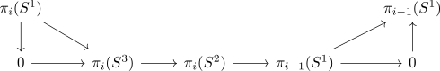

homotopy group of S^2 as direct sum
Proposition
Let $i \geq 2$ Then
as groups given by
i.e. the hopf fibration from S^3 and suspension functor
Proof
consider the hopf fibration from S^3.

where the first map is nullhomotopic by cellular approximation.
Then using the long exact sequence of a serre fibration this shows that

is short exact (since the map $\pi_i(S^1) \rightarrow \pi_i(S^3), \pi_{i-1}(S^1) \rightarrow \pi_{i-1}(S^3)$ are the zero morphisms, hence we may replace it above)
Here the sequence is given by the puppe sequence and hence the map $\pi_{i}(S^2) \rightarrow $\pi_{i-1}(S^1)$ is induced by
But by the freudenthal suspension theorem for a sphere there also exists the unit
which is an isomorphism on $\pi_1$ (cf. freudenthal suspension theorem)
Hence by splitting on own homotopy group and splitting on arbitrary homotopy group the map
is a split epi and using the Splitting Lemma (note that $\pi_i(S^1)$ is always abelian and otherwise $i \geq 2$) we get
as an isomorphism.